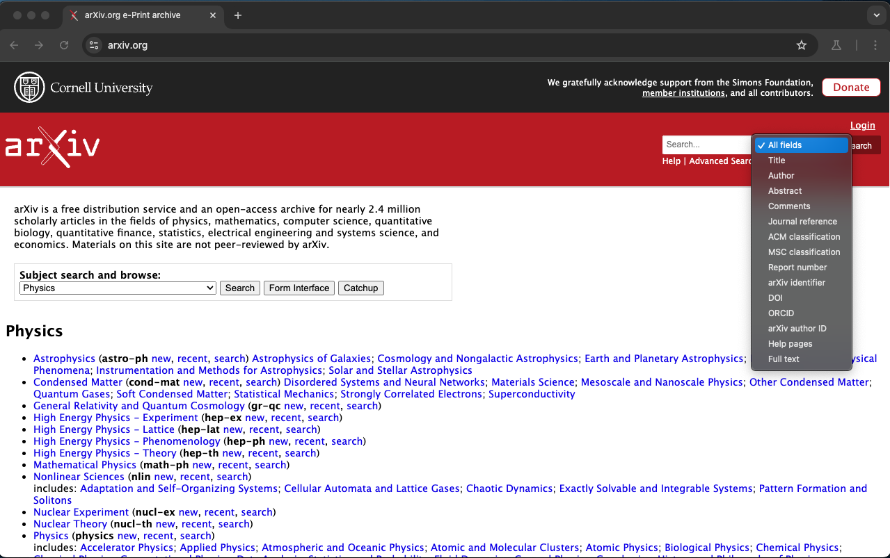
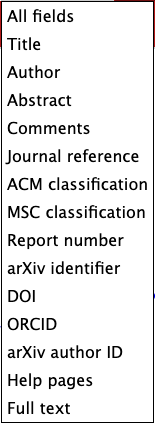
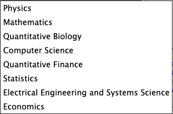

Playwrightでのドロップダウンメニューのスクリーンショット取得
Playwrightを使用してウェブサイトのドロップダウンメニューを開いた状態のスクリーンショットを撮影する際, ネイティブな`select`要素が難しい理由とその解決策を解説する.
初期の問題
以下の初期コードでは, ドロップダウンメニューを開いてからスクリーンショットを撮ることを試みたが, 実際にはメニューが閉じてしまい, 期待したスクリーンショットが撮影できなかった.
import { test } from "@playwright/test";
import * as path from "path";
const screenshotDir = "./result";
test("test", async ({ page }) => {
await page.goto("https://arxiv.org/");
await page.getByLabel("Field to search").click();
await page.waitForTimeout(3000);
await page.screenshot({
path: path.join(screenshotDir, `hoge.png`),
fullPage: true,
});
});上記を実行すると以下のようになる. 
screenshot実行部分をコメントアウトして実行すると以下の状態になり, 本当はこれが欲しいスクリーンショットである. 
問題の原因
- ****ネイティブ要素の制限****: `select`要素はブラウザのネイティブコンポーネントであり, フォーカスが外れると自動的に閉じるため, スクリーンショットを撮る際にメニューが閉じてしまう問題があった.
解決策
問題を解決するために, `select`要素のドロップダウンメニューを模倣するカスタムメニューを作成し, それをスクリーンショットに収める方法を実装した.
import { test, Page } from "@playwright/test";
import * as path from "path";
const screenshotDir = "./result/initial";
async function simulateAndCaptureDropdown(page: Page, elementHandle: any, screenshotPath: string): Promise<void> {
await elementHandle.evaluate((selectElement: HTMLSelectElement) => {
const options = Array.from(selectElement.options);
const dropdownContainer = document.createElement("div");
dropdownContainer.setAttribute("id", "custom-dropdown");
dropdownContainer.style.position = "absolute";
dropdownContainer.style.backgroundColor = "white";
dropdownContainer.style.border = "1px solid black";
dropdownContainer.style.zIndex = "1000";
options.forEach((option) => {
const div = document.createElement("div");
div.textContent = option.textContent;
div.style.padding = "5px";
div.style.cursor = "pointer";
div.onclick = () => (selectElement.value = option.value);
dropdownContainer.appendChild(div);
});
document.body.appendChild(dropdownContainer);
const rect = selectElement.getBoundingClientRect();
dropdownContainer.style.top = `${rect.bottom + window.scrollY}px`;
dropdownContainer.style.left = `${rect.left + window.scrollX}px`;
});
const dropdown = await page.$("#custom-dropdown");
if (dropdown) {
await dropdown.screenshot({ path: screenshotPath });
await page.evaluate(() => {
const customDropdown = document.querySelector("#custom-dropdown");
if (customDropdown) {
customDropdown.remove();
}
});
} else {
console.error("Custom dropdown element not found");
}
}
test("test", async ({ page }) => {
await page.goto("https://arxiv.org/");
const elementHandle = await page.getByLabel("Field to search");
await simulateAndCaptureDropdown(page, elementHandle, path.join(screenshotDir, "dropdown-simulated.png"));
const elementHandle2 = await page.getByLabel("Subject search and browse:");
await simulateAndCaptureDropdown(page, elementHandle2, path.join(screenshotDir, "dropdown-simulated2.png"));
});解説
- ****カスタムメニューの利用****: typescriptで手動的にドロップダウンメニューを模倣しており, ネイティブ`select`要素の制限を回避している.
- ****要素ハンドルの使用****: `page.getByLabel`でHTML要素を取得し, `elementHandle`を使用して操作している.
- ****状態のリセット****: スクリーンショット後に`evaluate`を使って模倣したメニューを削除し, ページのオリジナルな状態を保っている.
以上がこの実装のポイントである. 適切な手法を用いることで, 通常の制限を回避し, 目的のインターフェース状態をキャプチャできる. 実際に動作すると以下のようなドロップダウン部分がスクリーンショットできる.  
コメント
この文章はgptを使って生成し, 少し手直しをした. コードも最初の状態で原因がわからず四苦八苦していた. 最初はgptに聞いても解決せずgithubのissueを探しても解決しなかったが, htmlのソースをgptに食わせたりすることでここまでできた. ブログも書くのが面倒なのでサボっているが, 文章自体もブログ用にまとめて, とお願いすれば良いことに気づいたのでやってみた. 楽ちん.